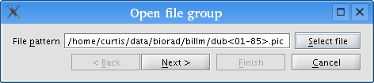
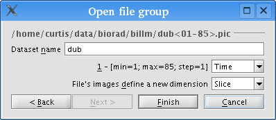

This topic describes how to import your multidimensional image data into VisBio effectively.
Throughout this explanation, we'll be using an example dataset called "dub." The dataset consists of 85 Bio-Rad PIC files, numbered dub01.pic through dub85.pic. The data is a time series of image stacks, with each file representing one timestep, and each timestep containing 33 images (sampled at 33 distinct focal planes). Each image is 768 x 512 pixels, and the dataset is about 1 GB total on disk. Note that the "sdub" dataset available for download from the VisBio website is a downsampled version of the full "dub" dataset.
From VisBio's perspective, this data is a collection of images with two
unique dimensional axes: Time and Slice. To most effectively work with this
data, it is important that you properly specify these dimensions during data
import.
A dialog box titled "Import data" will appear. Click "Select file" and a file chooser dialog box will appear. Now, navigate to the proper folder, select one of the files in your dataset (in one of the supported file formats), and click "Open." VisBio will determine the appropriate file pattern for your dataset. For example:

The above pattern indicates that all files numbered dub01.pic through dub85.pic will be included in the dataset.
Click the "Next >" button to continue. You will now see a dialog box that looks like:

The top lines show the file pattern from the previous screen. Each dimensional range tag (e.g., "<01-85>") represents one of the dataset's dimensional axes. In this case, VisBio guesses that the file numbering marked "<01-85>" is a Time dimension. Of course, you can use the dropdown list box to change the dimension to Slice or some other dimension, if your data is organized that way. You can even type in a custom name for the dimensional axis if you wish.
Also, within each file, there are often several images. In the above case, the data contains 33 images per file. VisBio has guessed that the image data within each file is Slice data, but again, you can change that to Time or some other dimension.
You can specify the physical dimensions of your images, including the width and height in microns, as well as the distance between adjacent image slices, by checking the "Use microns instead of pixels" box and typing in the appropriate values.
After tweaking any necessary settings, click "Finish." The dataset has now been imported, and the data information box will contain a bunch of information. In our example, it will look like:
|
/home/curtis/data/biorad/billm/dub<01-85>.pic
Dimensionality: 4D
2805 images totaling 1.03 gigapixels. |
Now VisBio understands how your data is organized. You can now create a
display for the dataset to visualize it, or perform some processing by
constructing one or more derivative data objects first.